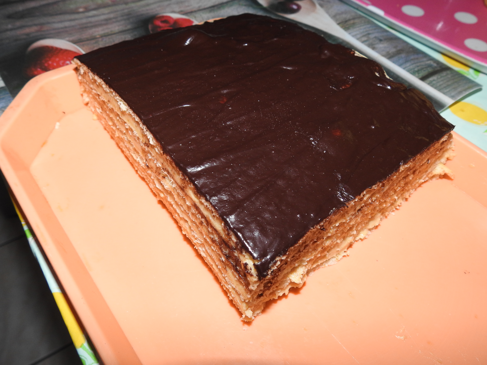

Desszertek

3bit szelet

Amerikai Palacsinta

Bagolyszem

Beigli

Bukta

Rápatorta

Cheesecake

Brownie

Chocolate Fudge Cake

Citromos Tarte

Csokibomba

Csoki torta

Csokis vaniliás csigák

Csokoládés pattogós sütemény

Csőröge

Darálóskeksz
Egytojásos torta

Fánk

Fonott kalács

Goffri

Gyümölcs torta

Hókifli

Jugó kifli

Kakaós csiga

Karamellás shortbread

Kavart csokis túrós

Kevert diós

Kenyérlángos

Képviselőfánk

Kinder buenó szelet

Kókusz golyó

Kókusz kocka

Krémes

Krumplis pogácsa

Kürtös kalács

Lángos

Linzer

Madártej szelet

Mikrós süti

Muffin

Nap és éj

Napraforgó sütemény

Őzgerinc

Palacsinta

Paplan sütemény

Piskóta forró csokival

Piskóta tekercs

Pizzás-szalámis mnicsiga

Pogácsa

Pudingos szelet

Ropogós sajtosrúd

Sajtos kifli

Sajtos rolló

Sajtos rúd

Sajtos sós perec

Sajtos tallér

Somlói galuska

Sport szelet

Tiramisu

Túrós-Sajtos

vaniliás karika recept

Vendégváró süti